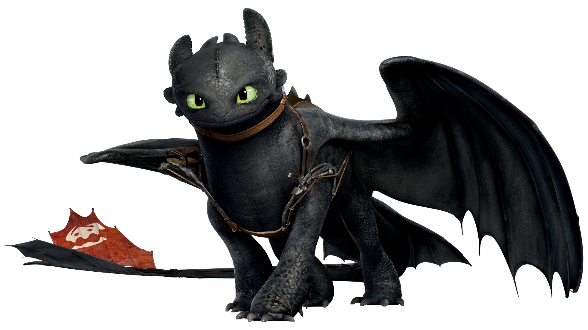

Back
Night Fury
Class: Strike
Description: The rarest and most intelligent dragon species, with black, aerodynamic scales and incredible speed. Night Furies are highly elusive and possess unmatched agility.

Abilities:
-Fires blue plasma blasts
-Silent flight for stealth attacks
-Echolocation for night navigation
-Extreme speed and maneuverability
Weaknesses:
-Vulnerable if tail fin is damaged
-Dependent on strategic attacks
Notable Dragon:
Toothless (Hiccup's dragon)